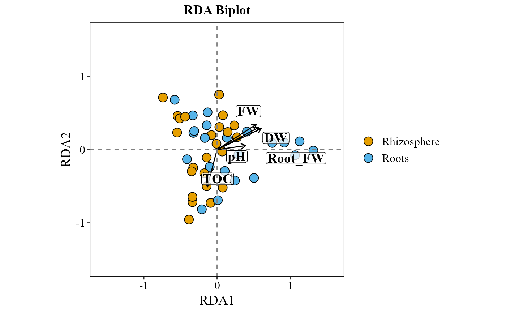

Performs Canonical Correspondence Analysis (CCA) or Redundancy Analysis (RDA) based on a species abundance table and selected environmental variables, returning a biplot with ggplot2 that visualizes sample scores and environmental vectors.
Usage
cca_rda_biplot(
table,
env_data,
env_vars,
method = "hell",
metadata,
group_col = NULL,
group_colors = NULL,
legend_title = NULL,
scale_env = TRUE,
pval_threshold = 0.05,
p_adjust_method = "none",
show_all_env_vectors = FALSE,
analysis = "CCA",
scale_arrows = 1,
title = "auto",
save_table = FALSE,
table_filename = "cca_rda_scores.txt"
)Arguments
- table
A data frame of species abundances with taxa as rows and samples as columns, plus a final
taxonomycolumn (same format as the rest of the package). Internally transposed to samples-as-rows for the ordination.- env_data
A data frame of environmental variables, with row names matching the sample names in
table.- env_vars
A character vector with the names of environmental variables to include in the analysis.
- method
Transformation method passed to
decostand(default is"hell"for Hellinger).- metadata
Data frame with sample metadata; its first column must hold the sample IDs.
- group_col
Optional name of the column in
metadataused to define sample groups.- group_colors
Optional named vector of colors to use for each group.
- legend_title
Optional custom title for the group legend.
- scale_env
Logical; whether to scale environmental variables (default is
TRUE).- pval_threshold
P-value threshold for selecting significant environmental variables (default is
0.05).- p_adjust_method
Multiple-comparison correction applied to the
vegan::envfit()p-values of the environmental variables beforepval_threshold; any method ofstats::p.adjust(). Default"none"(raw p-values, the usual choice with few variables).- show_all_env_vectors
Logical; if TRUE, plot all environmental vectors regardless of significance.
- analysis
Constrained ordination method:
"CCA"(default, Canonical Correspondence Analysis) or"RDA"(Redundancy Analysis). Case-insensitive.- scale_arrows
Numeric value to scale environmental vectors in the plot.
- title
Plot title.
"auto"(default) generates"CCA Biplot"or"RDA Biplot";NULLshows no title; any other string is used as-is.- save_table
Logical. If
TRUE, saves a combined table of sample scores and environmental vector loadings to disk, distinguished by atypecolumn ("site"or"vector"). DefaultFALSE.- table_filename
Character. File path/name for the saved table (used when
save_table = TRUE). Default"cca_rda_scores.txt".
Details
The p-values of the environmental vectors come from
vegan::envfit() permutations; call set.seed() before the
function to make them reproducible.
Examples
table_path <- system.file("extdata", "tabla_bacteria.txt", package = "MicroBioMeta")
table <- read.delim(table_path, row.names = 1, check.names = FALSE)
metadata_path <- system.file("extdata", "metadata_bacteria.txt", package = "MicroBioMeta")
metadata <- read.delim(metadata_path, check.names = FALSE)
colnames(metadata)[1] <- "SampleID"
# env_data must have rownames matching the sample names in `table`
env_data <- metadata
rownames(env_data) <- env_data$SampleID
cca_rda_biplot(
table = table,
env_data = env_data,
metadata = metadata,
env_vars = c("pH", "TOC", "FW", "Root_FW", "DW"),
analysis = "RDA",
show_all_env_vectors = TRUE,
group_col = "Location"
)
